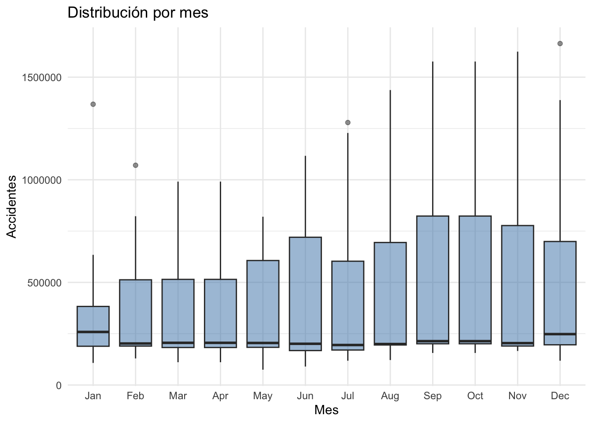
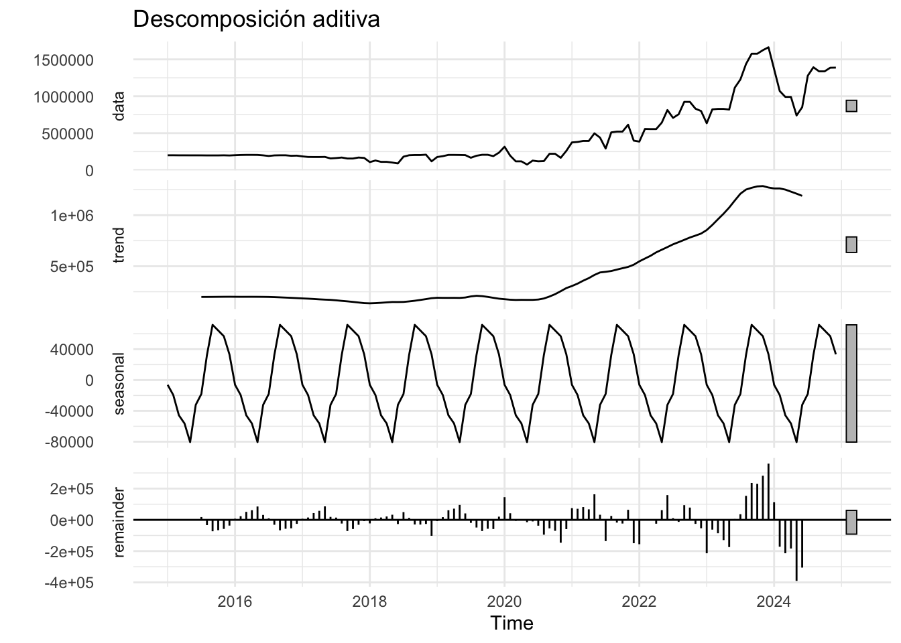
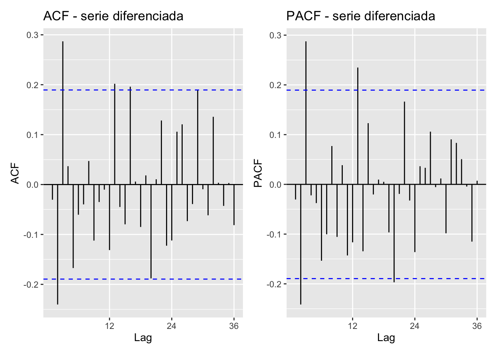

Code
library(tidyverse)
library(forecast)
library(tseries)
library(lubridate)
library(patchwork)
library(knitr)Rodrigo B.
Una empresa desea analizar el costo operativo mensual de las sucursales en la CDMX.
set.seed(2028)
n <- 120
idx <- 1:n
fecha <- seq(as.Date("2015-01-01"), by = "month", length.out = n)
tendencia_real <- 50 - 1.3 * idx^2 # cae por mejoras en infraestructura
estacionalidad_real <- 3 * sin(2 * pi * (idx - 10) / 12) # picos en temporada de lluvias/fin de año
ruido <- rnorm(n, mean = 0, sd = 5)
accidentes <- tendencia_real * estacionalidad_real * ruido
serie_df <- tibble(idx = idx, fecha = fecha, accidentes = cumsum(accidentes) + 200000)
accidentes_ts <- ts(serie_df$accidentes, start = c(2015, 1), frequency = 12)Series: accidentes_ts
ARIMA(2,1,2)(0,0,1)[12]
Coefficients:
ar1 ar2 ma1 ma2 sma1
-1.4496 -0.7382 1.7002 0.9138 0.3955
s.e. 0.1095 0.1025 0.0744 0.0806 0.0982
sigma^2 = 7.26e+09: log likelihood = -1518.6
AIC=3049.19 AICc=3049.94 BIC=3065.87Al visualizar la serie, se puede observar una tendencia creciente así como una varianza no constante, este puede ser un indicio de un modelo multiplicativo.
Se puede analizar la distribución por mes.

Como se discutió antes, la presencia de tendencia y varianza no constante, puede ser indicio de un modelo aditivo que requiere diferenciación o de un modelo multiplicativo.

Tendencia (\(m_t\)):
Estacionalidad (\(s_t\)):
Residuo (\(Y_t\)):
Box-Ljung test
data: accidentes_ts
X-squared = 1190.2, df = 24, p-value < 2.2e-16Se rechaza \(H_0\) de no autocorrelación.
Es posible encontrar un valor óptimo de \(\lambda\) para aplicar una transformación Box-Cox con la función BoxCox.lambda() de la paquetería forecast.

Box-Ljung test
data: serie_estacionaria
X-squared = 46.65, df = 24, p-value = 0.003695Sigue habiendo autocorrelación significativa tras diferenciar, esto es un indicio de que aún queda estructura ARMA por capturar, y los rezagos significativos de la ACF/PACF orientan los órdenes candidatos de la siguiente sección.
Un primer criterio es que sean modelos estacionarios causales e invertibles.
Se suele evaluar la parsimonia del modelo, evitar la redundancia de parámetros, así como comparar algunas métricas según sea el objetivo final del modelo, como métricas que evaluan el poder predictivo (real y aparente).
Se analizan los supuestos del modelo, esto permite que las estimaciones sean más confiables.